图6: 类的层次结构和元类
在本章中，我们会详细的看一下用以创建类和模块的数据结构。
首先，我想看一下如何在C层次上定义一个Ruby的类。本章只介绍一些有特殊意义的地方， 因此，我想让你先了解最常见的用法。
定义类和模块的API主要是下面的6个函数：
rb_define_class()rb_define_class_under()rb_define_module()rb_define_module_under()rb_define_method()rb_define_singleton_method()这些函数还有其它的版本，但是扩展库，甚至大多数核心库就只是用这些API定义的。 我一个个地会为你介绍这些函数。
rb_define_class() 在顶层定义一个类。让我们以Ruby数组类Array为例。
Array类的定义
19 VALUE rb_cArray;
1809 void
1810 Init_Array()
1811 {
1812 rb_cArray = rb_define_class("Array", rb_cObject);
(array.c)
rb_cObject和rb_cArray分别对应着在Ruby的层次上Object和Array。
前缀rb表示它属于ruby，c表示它是一个类对象。这个命名规则在ruby中随处可见。
调用rb_define_class()定义了Array，它继承自Object。rb_define_class()创建类对象，
与此同时，它也创建一个常量。这意味着在这之后，你就可以在Ruby程序中访问Array。
它对应着下面的Ruby程序：
class Array < Object
相信你已经注意到这里没有end，故意这样写的。因为到rb_define_class()这里，
类的主体还没有执行。
之后是rb_define_class_under()。这个函数定义了一个嵌套在其它类或模块中的类。
这次的例子是stat(2)返回的类，File::Stat。
File::Stat的定义
78 VALUE rb_cFile;
80 static VALUE rb_cStat;
2581 rb_cFile = rb_define_class("File", rb_cIO);
2674 rb_cStat = rb_define_class_under(rb_cFile, "Stat", rb_cObject);
(file.c)
这段代码对应着下面的Ruby程序：
class File < IO class Stat < Object
这次我又故意省略了end。
rb_define_module()很简单，让我们快点结束它。
Enumerable的定义
17 VALUE rb_mEnumerable;
492 rb_mEnumerable = rb_define_module("Enumerable");
(enum.c)
rb_mEnumerable的m类似于class的c：它表示这是一个模块（module）。
对应的Ruby程序是：
module Enumerable
rb_define_module_under()不常用，我们略过它。
这次的函数用以定义方法，rb_define_method()。它很常用。
我们再从Array中找个例子。
Array#to_s的定义
1818 rb_define_method(rb_cArray, "to_s", rb_ary_to_s, 0); (array.c)
这个to_s方法定义在Array中。方法体由函数指针（rb_ary_to_s）指定。
第四个参数是方法参数的个数。因为to_s没有参数，所以它是0。如果我们编写对应的Ruby程序，
会是这样：
class Array < Object
def to_s
# rb_ary_to_s()的内容
end
end
当然，class部分不包含在rb_define_method()中，只有def是准确的。
但是，如果没有class部分，它看上去像个一般的函数，因此我也写了用于封装的class部分。
再来一个例子，这次有一个参数：
▼Array#concat的定义
1835 rb_define_method(rb_cArray, "concat", rb_ary_concat, 1); (array.c)
这里定义的类是rb_cArray（Array），方法名是concat，它的主体是rb_ary_concat()，
参数个数是1。它对应的Ruby程序是这样：
class Array < Object
def concat( str )
# rb_ary_concat()的内容
end
end
我们可以为一个特定的对象实例定义方法。这种方法称为singleton方法。
在第一章《Ruby语言最小化》中，我曾以File.unlink为例，我本想在这里先看一下它，
但是由于一些特殊原因，我们来看File.link。
File.link的定义
2624 rb_define_singleton_method(rb_cFile, "link", rb_file_s_link, 2); (file.c)
它的用法很像rb_define_method()。唯一的差别在于第一个参数，它是方法所属的对象。
这里是rb_cFile。
能够像前面那样进行定义当然好，但是这些函数在哪调用，又以何种方式执行呢？
这些定义放到名为Init_xxxx()的函数中。比如，对于Array来说，这个函数是Init_Array()，
它是这个样子：
Init_Array
1809 void
1810 Init_Array()
1811 {
1812 rb_cArray = rb_define_class("Array", rb_cObject);
1813 rb_include_module(rb_cArray, rb_mEnumerable);
1814
1815 rb_define_singleton_method(rb_cArray, "allocate",
rb_ary_s_alloc, 0);
1816 rb_define_singleton_method(rb_cArray, "[]", rb_ary_s_create, -1);
1817 rb_define_method(rb_cArray, "initialize", rb_ary_initialize, -1);
1818 rb_define_method(rb_cArray, "to_s", rb_ary_to_s, 0);
1819 rb_define_method(rb_cArray, "inspect", rb_ary_inspect, 0);
1820 rb_define_method(rb_cArray, "to_a", rb_ary_to_a, 0);
1821 rb_define_method(rb_cArray, "to_ary", rb_ary_to_a, 0);
1822 rb_define_method(rb_cArray, "frozen?", rb_ary_frozen_p, 0);
(array.c)
ruby启动时会显式调用内建程序库的Init函数。这在inits.c中完成。
rb_call_inits()
47 void
48 rb_call_inits()
49 {
50 Init_sym();
51 Init_var_tables();
52 Init_Object();
53 Init_Comparable();
54 Init_Enumerable();
55 Init_Precision();
56 Init_eval();
57 Init_String();
58 Init_Exception();
59 Init_Thread();
60 Init_Numeric();
61 Init_Bignum();
62 Init_Array();
(inits.c)
这样，Init_Array()就得到了正确的调用。
这里解释了内建程序库，但扩展程序库又如何呢？实际上，对于扩展程序库而言， 规则是一样的。看下面的代码：
require "myextension"
以同样的方法，如果加载的扩展程序是myextension.so，在加载时，
会调用名为Init_myextension()的（extern）函数。如果超出本章的范围，
它们又是如何调用的呢？你应该读读第18章《加载》。让我们以一个Init的例子结束这里的讲解。
下面的例子来自stringio，ruby提供的一个扩展程序库，也就是说，它不属于内建程序库。
Init_stringio() (起始部分)
895 void
896 Init_stringio()
897 {
898 VALUE StringIO = rb_define_class("StringIO", rb_cData);
899 rb_define_singleton_method(StringIO, "allocate",
strio_s_allocate, 0);
900 rb_define_singleton_method(StringIO, "open", strio_s_open, -1);
901 rb_define_method(StringIO, "initialize", strio_initialize, -1);
902 rb_enable_super(StringIO, "initialize");
903 rb_define_method(StringIO, "become", strio_become, 1);
904 rb_define_method(StringIO, "reopen", strio_reopen, -1);
(ext/stringio/stringio.c)
rb_define_singleton_method()现在，你应该或多或少的了解了如何定义普通方法。编写方法主体，然后在m_tbl注册就成了。
但是singlton方法呢？我们先来看看singleton方法的定义。
rb_define_singleton_method()
721 void
722 rb_define_singleton_method(obj, name, func, argc)
723 VALUE obj;
724 const char *name;
725 VALUE (*func)();
726 int argc;
727 {
728 rb_define_method(rb_singleton_class(obj), name, func, argc);
729 }
(class.c)
我已经解释过了，rb_define_method()是一个用来定义普通方法的函数，
因此同普通方法的差异仅仅在于使用rb_singleton_class()。
但是究竟什么是singleton类呢？
简而言之，singleton类就是一个虚拟类，它只用于执行singleton方法。 singleton方法就是定义于singleton类的方法。 （从某种意义上说）类首先是一种连接对象和方法的实现，singleton类侧重于实现的层面。 Ruby语言中并不正式包含它们，所以，它们不会出现在Ruby的层次上。
rb_singleton_class()好的，让我们确认一下singleton类的结构。每次都给你给你看函数代码太简单了， 因此，这次我要使用新武器：调用图（Call Graph）。
rb_define_singleton_method
rb_define_method
rb_singleton_class
SPECIAL_SINGLETON
rb_make_metaclass
rb_class_boot
rb_singleton_class_attached
调用图是一个显示函数（更常见的是过程）间调用关系的图。 把代码中所写的全部调用展现出来的调用图称为静态调用图（static call graph）。 只展示一次执行期间内完成调用的调用图称为动态调用图（dynamic call graph）。
这个图是一张静态调用图，缩进表示哪个函数调用哪个函数。比如，
rb_define_singleton_method()调用rb_define_method()和rb_singleton_class()。
rb_singleton_class()调用SPECIAL_SINGLETON()和rb_make_metaclass()。
让我们回到代码。看调用图时，你可以看到rb_singleton_class()的调用走得非常深。
至此，所有的调用层次都已透明，这样我们看函数时就不会迷失了。
在这个深度，我很容易忘掉代码在做什么。在这种情况下，我就可以检查一下调用图，
以得到一个更好的理解。这次，我们会并行的解释rb_singleton_class()下的两个过程做了些什么。
我们要注意以下两点：
singleton类是一种特殊的类：它们与普通类基本相同，但还是有些许些差别的。 找到这些差别，我们就可以很好的解释singleton类。
如何找到这些差别呢？我们应该看看创建普通类的函数和创建singleton类的函数差别所在。
为此，我们要找到创建普通类的函数。普通类由rb_define_class()定义，
它一定是以某种方式调用，或是有另一个函数创建普通的类。
我们暂时不看rb_define_class()本身的内容。由于某些原因，我对一些更深的东西感兴趣。
所以，我们先看一下rb_define_class()的调用图。
rb_define_class
rb_class_inherited
rb_define_class_id
rb_class_new
rb_class_boot
rb_make_metaclass
rb_class_boot
rb_singleton_class_attached
我对rb_class_new()产生了兴趣。难道这个名字不意味着它要创建一个新的类吗？
我们确认一下。
rb_class_new()
37 VALUE
38 rb_class_new(super)
39 VALUE super;
40 {
41 Check_Type(super, T_CLASS);
42 if (super == rb_cClass) {
43 rb_raise(rb_eTypeError, "can't make subclass of Class");
44 }
45 if (FL_TEST(super, FL_SINGLETON)) {
46 rb_raise(rb_eTypeError, "can't make subclass of virtual class");
47 }
48 return rb_class_boot(super);
49 }
(class.c)
Check_Type()用以检查对象结构的类型，因此，我们可以忽略它。
rb_raise()是错误处理，因为我们也忽略它。只剩下rb_class_boot()。
那么我们就来看看它。
rb_class_boot()
21 VALUE
22 rb_class_boot(super)
23 VALUE super;
24 {
25 NEWOBJ(klass, struct RClass); /* 分配struct RClass */
26 OBJSETUP(klass, rb_cClass, T_CLASS); /* 初始化RBasic部分 */
27
28 klass->super = super; /* (A) */
29 klass->iv_tbl = 0;
30 klass->m_tbl = 0;
31 klass->m_tbl = st_init_numtable();
32
33 OBJ_INFECT(klass, super);
34 return (VALUE)klass;
35 }
(class.c)
NEWOBJ()和OBJSETUP()是一种固定的表达式，用以创建一个内部结构类型（struct Rxxxx）的Ruby对象。
它们都是宏。NEWOBJ()创建struct RClass，指针放到第一个参数klass中。
OBJSETUP()初始化RClass的struct RBasic成员（也就是basic.klass和basic.flags）。
OBJ_INFECT()是一个与安全相关的宏。从现在开始，我们忽略它。
在(A)处，klass的super成员设为参数super。看上去，
rb_class_boot()这个函数创建了一个继承自super的类。
从上面可以看出，rb_class_boot()是一个创建类的函数。
rb_class_new()与之类似。
然后，我们再来看一次rb_singleton_class()的调用图：
rb_singleton_class
SPECIAL_SINGLETON
rb_make_metaclass
rb_class_boot
rb_singleton_class_attached
这里也调用了rb_class_boot()。因此，直到那个点上，它等同于普通的类。
随后的部分便是普通类和singleton类的差异之处，也就是singleton的特征所在。
如果你已经弄清楚迄今为止的一切，我们只要读一下rb_singleton_class()和rb_make_metaclass()就可以了。
rb_singleton_class()rb_singleton_class()有些长，让我们先去除一些无关紧要的部分。
rb_singleton_class()
678 #define SPECIAL_SINGLETON(x,c) do {\
679 if (obj == (x)) {\
680 return c;\
681 }\
682 } while (0)
684 VALUE
685 rb_singleton_class(obj)
686 VALUE obj;
687 {
688 VALUE klass;
689
690 if (FIXNUM_P(obj) || SYMBOL_P(obj)) {
691 rb_raise(rb_eTypeError, "can't define singleton");
692 }
693 if (rb_special_const_p(obj)) {
694 SPECIAL_SINGLETON(Qnil, rb_cNilClass);
695 SPECIAL_SINGLETON(Qfalse, rb_cFalseClass);
696 SPECIAL_SINGLETON(Qtrue, rb_cTrueClass);
697 rb_bug("unknown immediate %ld", obj);
698 }
699
700 DEFER_INTS;
701 if (FL_TEST(RBASIC(obj)->klass, FL_SINGLETON) &&
702 (BUILTIN_TYPE(obj) == T_CLASS ||
703 rb_iv_get(RBASIC(obj)->klass, "__attached__") == obj)) {
704 klass = RBASIC(obj)->klass;
705 }
706 else {
707 klass = rb_make_metaclass(obj, RBASIC(obj)->klass);
708 }
709 if (OBJ_TAINTED(obj)) {
710 OBJ_TAINT(klass);
711 }
712 else {
713 FL_UNSET(klass, FL_TAINT);
714 }
715 if (OBJ_FROZEN(obj)) OBJ_FREEZE(klass);
716 ALLOW_INTS;
717
718 return klass;
719 }
(class.c)
前半部分和后半部分由空行分开。前半部分处理特殊情况，后半部分处理一般情况。 换句话说，后半部分是函数的主干。所以，我们留下它，先来讨论前半部分。
前半部分处理的是非指针的VALUE，也就是说没有C结构的对象。首先，
挑出Fixnum和Symbol。随后，rb_special_const_p()这个函数对非指针的VALUE返回true。
这里，Qtrue, Qfalse和Qnil应该作为异常捕获。除此之外，便不再存在有效的非指针值了，
因此，用rb_bug()报告bug。
DEFER_INTS()和ALLOW_INTS()以相同的INTS结尾，因此你应该成对的来看它们。
实际上，它们是同信号相关的宏。因为它们定义在rubysig.h中，你可以猜到，
INTS是中断（interrupt）的缩写。你可以忽略它们。
rb_make_metaclass()rb_make_metaclass()
142 VALUE
143 rb_make_metaclass(obj, super)
144 VALUE obj, super;
145 {
146 VALUE klass = rb_class_boot(super);
147 FL_SET(klass, FL_SINGLETON);
148 RBASIC(obj)->klass = klass;
149 rb_singleton_class_attached(klass, obj);
150 if (BUILTIN_TYPE(obj) == T_CLASS) {
151 RBASIC(klass)->klass = klass;
152 if (FL_TEST(obj, FL_SINGLETON)) {
153 RCLASS(klass)->super =
RBASIC(rb_class_real(RCLASS(obj)->super))->klass;
154 }
155 }
156
157 return klass;
158 }
(class.c)
我们已经看过了rb_class_boot()。它使用参数super作为它的超类，创建了一个（普通）类。
随后，这个类设置了FL_SINGLETON。这里明显很可疑。从函数名上看，
我们认为它不该表示一个singleton类。
继续简化过程。参数，返回值，局部变量都是VALUE，抛开声明，
我们可以得到下面压缩的结果：
rb_singleton_class() rb_make_metaclass() （压缩后）
rb_singleton_class(obj)
{
if (FL_TEST(RBASIC(obj)->klass, FL_SINGLETON) &&
(BUILTIN_TYPE(obj) == T_CLASS || BUILTIN_TYPE(obj) == T_MODULE) &&
rb_iv_get(RBASIC(obj)->klass, "__attached__") == obj) {
klass = RBASIC(obj)->klass;
}
else {
klass = rb_make_metaclass(obj, RBASIC(obj)->klass);
}
return klass;
}
rb_make_metaclass(obj, super)
{
klass = create a class with super as superclass;
FL_SET(klass, FL_SINGLETON);
RBASIC(obj)->klass = klass;
rb_singleton_class_attached(klass, obj);
if (BUILTIN_TYPE(obj) == T_CLASS) {
RBASIC(klass)->klass = klass;
if (FL_TEST(obj, FL_SINGLETON)) {
RCLASS(klass)->super =
RBASIC(rb_class_real(RCLASS(obj)->super))->klass;
}
}
return klass;
}
rb_singleton_class()中if语句的条件看上去相当复杂。然而，这个条件却并非主干，
因此，我们稍后来看。我们先来思考一下if的false分支发生了什么。
rb_make_metaclass()的BUILTIN_TYPE()类似于TYPE()，
它是一个用以获取结构类型标志的宏（T_xxxx）。
这里的条件就是“如果obj是一个类”。此刻，我们最好不要把自己限制在obj是一个类上，
因此，我们去掉它。
通过这些简化，我们得到下面的代码：
▼rb_singleton_class() rb_make_metaclass() （再压缩后）
rb_singleton_class(obj)
{
klass = create a class with RBASIC(obj)->klass as superclass;
FL_SET(klass, FL_SINGLETON);
RBASIC(obj)->klass = klass;
return klass;
}
但是，这里仍有难于理解的一面。klass用得太多，我们把klass改为sclass。
rb_singleton_class() rb_make_metaclass() （变量替换）
rb_singleton_class(obj)
{
sclass = create a class with RBASIC(obj)->klass as superclass;
FL_SET(sclass, FL_SINGLETON);
RBASIC(obj)->klass = sclass;
return sclass;
}
现在，它应该很好理解了。为了让它更加简单，我用图来表示它做了些什么（图1）。 水平方向上是“实例－类”的关系，垂直方向是继承（超类在上）。
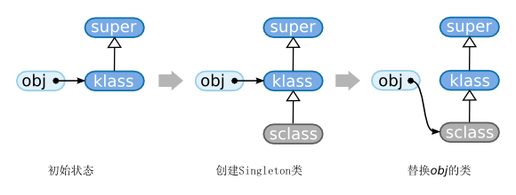
图1: rb_singleton_class
对比这幅图的第一部分和最后一部分，你就可以理解在改变结构的情况下插入sclass。
这就是singleton类的全部。总之，继承增加了一级。如果方法定义在singleton类中，
这种构造方式让klass的其它实例可以定义完全不同的方法。
顺便说一下，在压缩过程中，你一定已经看见了，
对rb_singleton_class_attached()的调用被悄悄的去掉了。这里：
rb_make_metaclass(obj, super)
{
klass = create a class with super as superclass;
FL_SET(klass, FL_SINGLETON);
RBASIC(obj)->klass = klass;
rb_singleton_class_attached(klass, obj); /* 这里 */
让我们看一下它做了些什么。
▼rb_singleton_class_attached()
130 void
131 rb_singleton_class_attached(klass, obj)
132 VALUE klass, obj;
133 {
134 if (FL_TEST(klass, FL_SINGLETON)) {
135 if (!RCLASS(klass)->iv_tbl) {
136 RCLASS(klass)->iv_tbl = st_init_numtable();
137 }
138 st_insert(RCLASS(klass)->iv_tbl,
rb_intern("__attached__"), obj);
139 }
140 }
(class.c)
如果klass设置了FL_SINGLETON标志……，也就是说，如果它是一个singleton类，
在klass实例变量表（iv_tbl）中加入__attached__ → obj的关系。
看上去就是这样了
（在我们这种情况下，klass总是一个singleton类……，总之，它设置了FL_SINGLETON标志。）。
__attached__没有@前缀，但它存在实例变量表中，因此它仍然是个实例变量。
这种实例变量在Ruby层次上绝对无法读取，因此，它可以用于保存一些系统专用的值。
让我们考虑一下klass和obj的关系。klass是obj的singleton类。换句话说，
singleton类用这个“不可见的”的实例变量记住了创建它的实例。
在singleton类改变时，这个值用来调用实例（比如obj）的钩子方法。
比如说，给singleton类添加一个方法时，就会调用obj的singleton_method_added。
这么做没有什么逻辑上的必然性，因为语言是这么定义的。
但是，这么做不要紧吗？这样把实例存储在__attached__的方式，
会让强制singleton类拥有一个唯一附着实例。比如，通过获取（以某种方式）singleton类，
然后调用new，难道singleton类不会有多个实例吗？
没有那样的事，因为要做适当检查，以阻止创建singleton类的实例。
singleton类原本是为了singleton方法而存在的。singleton方法是只存在于特定对象的方法。 如果singleton类可以有多个实例，它们便与普通类一样了。所以，要强制它们只有一个实例。
我们已经做了许多，或许是蓄意破坏，我们还是结束吧！让我们按顺序总结一下。
什么是singleton类？它们是设置了FL_SINGLETON标志的类，只能拥有一个实例。
什么是singleton方法？它们是定义在一个对象的singleton类中的方法。
类也有一个“类”，那就是Class。Class的类也是Class。
也就是说，我们在此陷入一个无限的循环中（图2）。
图2: 类的无限循环
至此，我们已经看过了一些东西，这之后就是本章的主题。类如何形成循环？
首先，在Ruby中，所有数据都是对象。类也是数据，因此在Ruby中， 它们也是对象。
因为它们是对象，它们必须响应方法。“为了响应方法，你必须属于某个类”， 设置这样的规则会使处理更加简单。“类也要有一个类”的需求由此产生。
让我们以此为基础，考虑一下如何实现它。首先，我们先来尝试一下最为天真的方法，
Class的类是ClassClass，ClassClass的类是ClassClassClass……，
以前面说的这种方式，你可以想象到一个由类的类相连的链。但是无论你以怎样的方式来看，
这种方法都不可能高效的实现。所以，一般在面向对象语言中，Class的类就是Class自身，
由此创建了一个无限的虚拟的实例——类的关系。
重复一次，Class的类是Class，但这样只是让实现简单，逻辑上没有什么重要的。
“一切皆对象”，这是谈到Ruby时经常用到的一句广告语。作为这句话另一部分， “类也对象！”也应运而生。但是这个表述通常太过高远。考虑这些说法时， 我们必须一分为二：
谈及数据或代码会让讨论更加难于理解，因此我们这里把“数据”的含义限制为“程序中可以被放入变量的东西”。
“能够在程序中操作类”这一事实让程序拥有了操作自身的能力。这种能力称为反射（reflection）。 它适用于对类直接进行操作，对Ruby这种拥有类的面向对象程序设计语言更是如此。
尽管这样，也有不把类当对象的时候。比如以函数风格的方法（定义在顶层的函数）操作类也是完全没有问题。 然而，因为在解释器内部存在表示类的数据结构，直接在面向对象语言中使用它们显得更自然， Ruby就是这样做的。
而且，Ruby的目标是所有的数据都是对象。因此，把类表示成对象也很合适。
顺便说一下，在Ruby中，类必须是对象，原因同反射无关。 那就是能够定义独立于实例方法（在Java和C++中，称为静态方法）。
为了实现静态方法，有一件事是必需的：singleton方法。连锁反应让singleton类也成为了必需品。 图3展示了这种依赖关系。
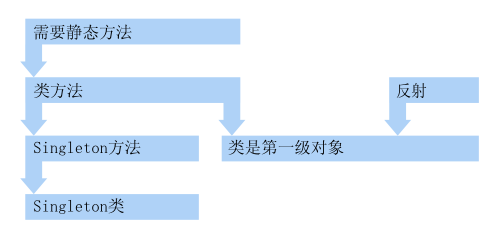
图3: 需求依赖
在Ruby中，singleton方法定义在类中，称为类方法。然而这个规范有些奇怪。 为什么类方法可以继承？
class A
def A.test # 在A中定义singleton方法
puts("ok")
end
end
class B < A
end
B.test() # 调用它
类之外的对象绝对不可能发生这样的事情。换句话说，只有类进行了特殊处理。 在下面一节中，我们会看到类方法如何继承。
假设类方法可以继承，这个操作在哪完成的呢？类定义（创建）的时候？ singleton方法定义的时候？让我们看看定义类的代码吧！
定义类当然就是rb_define_class()。让我们看看这个函数的调用图：
rb_define_class
rb_class_inherited
rb_define_class_id
rb_class_new
rb_class_boot
rb_make_metaclass
rb_class_boot
rb_singleton_class_attached
你会觉得好像在哪里见过它，确实，我们在前一节见过。那时你可能没有意识到，
但是现在要仔细考虑一下，rb_make_metaclass()为何出现在这里。
正如我们之前看到的那样，这个函数引入一个singleton类。这非常可疑。
即便我们没有定义singleton函数，为什么还有这个调用。
而且，为什么用低一级的rb_make_metaclass()而没有用rb_singleton_class()？
看起来，我们要把这附近的内容再次确认一下了。
rb_define_class_id()让我们先从它的调用者开始，rb_define_class_id()。
rb_define_class_id()
160 VALUE
161 rb_define_class_id(id, super)
162 ID id;
163 VALUE super;
164 {
165 VALUE klass;
166
167 if (!super) super = rb_cObject;
168 klass = rb_class_new(super);
169 rb_name_class(klass, id);
170 rb_make_metaclass(klass, RBASIC(super)->klass);
171
172 return klass;
173 }
(class.c)
rb_class_new()这个函数创建了一个类，其超类是super。
rb_name_class()的名字表示它是一个类命名，但是此刻，我们并不关心名字，
因此我们忽略它。随后就是有疑问的rb_make_metaclass()了。
这里同rb_singleton_class()中调用相比，参数不同。上次是这样：
rb_make_metaclass(obj, RBASIC(obj)->klass);
但是这次成了这样：
rb_make_metaclass(klass, RBASIC(super)->klass);
正如你所看到的，有些许不同。这样的差异会带来怎样的改变呢？
让我们再看一次简化的rb_make_metaclass()。
rb_make_metaclass（再一次）rb_make_metaclass （第一次压缩后）
rb_make_metaclass(obj, super)
{
klass = create a class with super as superclass;
FL_SET(klass, FL_SINGLETON);
RBASIC(obj)->klass = klass;
rb_singleton_class_attached(klass, obj);
if (BUILTIN_TYPE(obj) == T_CLASS) {
RBASIC(klass)->klass = klass;
if (FL_TEST(obj, FL_SINGLETON)) {
RCLASS(klass)->super =
RBASIC(rb_class_real(RCLASS(obj)->super))->klass;
}
}
return klass;
}
上次，故意忽略了if语句，但再来看一下，这里只针对T_CLASS，也就是类，
做了些什么，很明显，这很重要。在rb_define_class_id()中，这样调用它：
rb_make_metaclass(klass, RBASIC(super)->klass);
让我们用这个值将rb_make_metaclass()参数变量展开。
rb_make_metaclass (再压缩）
rb_make_metaclass(klass, super_klass /* == RBASIC(super)->klass */)
{
sclass = create a class with super_class as superclass;
RBASIC(klass)->klass = sclass;
RBASIC(sclass)->klass = sclass;
return sclass;
}
按照上面所示来做的话，会得到图4所示的结果。图中，括号里的名字是singleton类。
这个记法在本书中很常见，因此，我希望你可以记住。
这表示obj的singleton类记作(obj)。(klass)是klass的singleton类。
看上去singleton类夹在类和它超类的类之间。
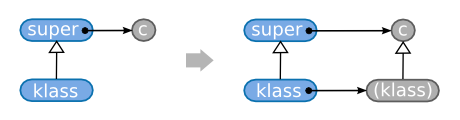
图4: 类的singleton类导入
试着从这个结果进一步扩展想像力，我们可以想到超类的类（图4的c）一定是超类的singleton类。 这样再多一层继承你也可以理解了（图5）。
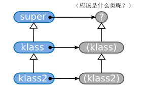
图5: 多层继承的层次结构
super和klass之间的关系等同于klass和klass2之间的关系，c一定是singleton类(super)。
如果如此继续下去，最终你会得到一个结论，Object的类一定是(Object)。
实际就是这样。比如，像下面的程序这样的继承：
class A < Object end class B < A end
内部创建了一个类似于图6的结构。
图6: 类的层次结构和元类
类和它的元类连接在一起，继承也如此，这样，类方法便得到了继承。
你已经理解类方法继承如何运作，但这么做反过来也带来一些问题。 类的singleton类的类是什么？这个用调试器试一下就好。 根据调查结果，我制作了图7。
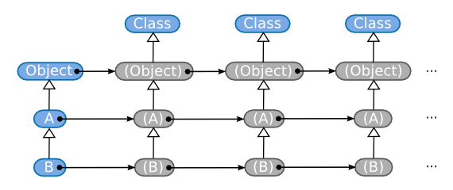
图7: 类的singleton类的类
类的singleton类把自己当作自己的类。相当复杂。
第二个问题：Object的类必须是Class。
在第一章《Ruby语言最小化》中，我已经确认了这一点，不是吗？
p(Object.class()) # 类
当然，这是“在Ruby层次”上的情况。但是“在C的层次上”，它是singleton类(Object)。
如果(Object)没有出现在Ruby的层次上，那只是因为Object#class忽略了singleton类。
让我们看看方法rb_obj_class()的主体来确认此事。
rb_obj_class()
86 VALUE
87 rb_obj_class(obj)
88 VALUE obj;
89 {
90 return rb_class_real(CLASS_OF(obj));
91 }
76 VALUE
77 rb_class_real(cl)
78 VALUE cl;
79 {
80 while (FL_TEST(cl, FL_SINGLETON) || TYPE(cl) == T_ICLASS) {
81 cl = RCLASS(cl)->super;
82 }
83 return cl;
84 }
(object.c)
CLASS_OF(obj)返回obj的basic.klass。在rb_class_real()中，
跳过了所有的singleton类（往超类方向）。首先，singleton类夹在类和其超类之间，
类似于一个代理。需要“真正的”类时，我们必须沿超类链前进（图8）。
I_CLASS会在我们稍后总结的时候出现。
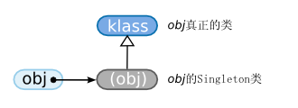
图8: singleton类和真正的类
好的，类中导入的singleton类也是一种类，它是类的类，因此称为元类。
然而，你要注意，singleton类不是元类。类中导入的singleton类是元类。 重要的不在于“它们是singleton类”，而在于“它们是类的类”。 初学Ruby的时候，我也陷入其中。也许其他朋友也会困惑，所以，我想在这里先行声明。
考虑一下，rb_make_metaclass()这个函数名不是非常好。用于类时，它确实创建了一个元类，
但用于对象时，却并非如此。
最后，即便你理解了一些类是元类，好像也没有什么具体的收获。 我希望你不会过多去关心它。
至此，关于类和元类的话题基本上结束了。但是还留下一个问题，关于3个元对象：
Object, Module和Class。它们3个无法用常用的API创建。为了创建类，元类必须构建出来，
但是正如我们前面看到的，元类的超类是Class。然而，因为Class还没有创建，
元类是无法构建出来的。因此在ruby中，只有这3个类的创建需要特殊处理。
那么让我们看一下代码：
▼Object, Module和Class的创建
1243 rb_cObject = boot_defclass("Object", 0);
1244 rb_cModule = boot_defclass("Module", rb_cObject);
1245 rb_cClass = boot_defclass("Class", rb_cModule);
1246
1247 metaclass = rb_make_metaclass(rb_cObject, rb_cClass);
1248 metaclass = rb_make_metaclass(rb_cModule, metaclass);
1249 metaclass = rb_make_metaclass(rb_cClass, metaclass);
(object.c)
首先，在前半部分，boot_defclass() 类似于rb_class_boot()，
它只是以给定的超类创建一个类。至此，我们得到图9左半部分的连接。
后半部分的三行， 创建和设置了(Object)，(Module)和(Class)。
(Object)和(Module)类……是其自身……已经在rb_make_metaclass()中设置了，
因此，没有问题。这样的话，元对象的引导就结束了。
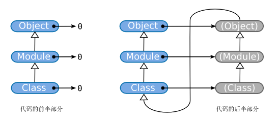
图9: 元对象的创建
考虑过所有内容之后，我们得到了如图10所示的最终形态。
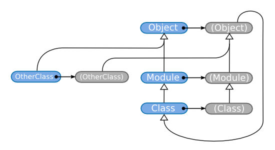
图10: Ruby元对象
在本节中，我们会分析一下类和类名（也就是常量）之间的相互转换如何执行，
具体的说，我们的目标是rb_define_class()和rb_define_class_under()。
首先，我们来看一下rb_defined_class()。这个函数结束之后，就可以从常量找到这个类了。
rb_define_class()
183 VALUE
184 rb_define_class(name, super)
185 const char *name;
186 VALUE super;
187 {
188 VALUE klass;
189 ID id;
190
191 id = rb_intern(name);
192 if (rb_autoload_defined(id)) { /* (A) 自动加载 */
193 rb_autoload_load(id);
194 }
195 if (rb_const_defined(rb_cObject, id)) { /* (B) rb_const_defined */
196 klass = rb_const_get(rb_cObject, id); /* (C) rb_const_get */
197 if (TYPE(klass) != T_CLASS) {
198 rb_raise(rb_eTypeError, "%s is not a class", name);
199 } /* (D) rb_class_real */
200 if (rb_class_real(RCLASS(klass)->super) != super) {
201 rb_name_error(id, "%s is already defined", name);
202 }
203 return klass;
204 }
205 if (!super) {
206 rb_warn("no super class for '%s', Object assumed", name);
207 }
208 klass = rb_define_class_id(id, super);
209 rb_class_inherited(super, klass);
210 st_add_direct(rb_class_tbl, id, klass);
211
212 return klass;
213 }
(class.c)
rb_define_class_id()前后有许多东西要理解……之前，我们获取或创建类。
之后，我们设置常量。我们下面详细的看一下。
（A） 在Ruby中，有一个自动加载的函数，访问一些常量时，自动加载程序库。
rb_autoload_xxxx()函数完成这个功能。忽略它不会有任何问题。
（B） 判定Object中是否定义了name。
（C） 获取name常量的值。第六章《变量与常量》中会对此进行详细解释。
（D） 我们以前看过rb_class_real()，如果类c是一个singleton类，或是ICLASS，
就沿着super的类层次结构向上，寻找一个不满足这样条件的类返回。简而言之，
这个函数跳过了不该出现在Ruby层次上的虚拟类。
我们可读的就是这些了。
这附近牵扯的常量非常麻烦。不过，在常量的章节中，我们会再次讨论类定义的，此刻， 部分的描述足以让我们心满意足了。
rb_define_class_id之后是这样：
st_add_direct(rb_class_tbl, id, klass);
这部分将类赋值给常量。然而，无论怎样也看不出来。实际上，顶层类与其它常量是分开的，
在rb_class_tbl()中重新归结到一起。这个划分同GC有些许关系，没有什么额外的本质意义。
我们已经清楚了如何从类名获得类，但是反向操作如何来做呢？通过调用p或Class#name，
我们就能得到类的名字，但是这是如何实现的呢？
实际上，前面的rb_name_class()已经完成了这个工作。附近的调用如下：
rb_define_class
rb_define_class_id
rb_name_class
我们看一下它的内容：
▼rb_name_class()
269 void
270 rb_name_class(klass, id)
271 VALUE klass;
272 ID id;
273 {
274 rb_iv_set(klass, "__classid__", ID2SYM(id));
275 }
(variable.c)
__classid__是另一个无法在Ruby中无法看到的实例变量。
实例变量表中只能放置VALUE值，将ID转成Symbol的工作由ID2SYM()完成。
这样便实现了类→常量名的检索。
对于定义在顶层的类，我们已经知道了名字和类之间是如何连接。
剩下的就是定义在模块或是其它类中的类，这就有些复杂了。
定义嵌套类的函数是rb_define_class_under()。
rb_define_class_under()
215 VALUE
216 rb_define_class_under(outer, name, super)
217 VALUE outer;
218 const char *name;
219 VALUE super;
220 {
221 VALUE klass;
222 ID id;
223
224 id = rb_intern(name);
225 if (rb_const_defined_at(outer, id)) {
226 klass = rb_const_get(outer, id);
227 if (TYPE(klass) != T_CLASS) {
228 rb_raise(rb_eTypeError, "%s is not a class", name);
229 }
230 if (rb_class_real(RCLASS(klass)->super) != super) {
231 rb_name_error(id, "%s is already defined", name);
232 }
233 return klass;
234 }
235 if (!super) {
236 rb_warn("no super class for '%s::%s', Object assumed",
237 rb_class2name(outer), name);
238 }
239 klass = rb_define_class_id(id, super);
240 rb_set_class_path(klass, outer, name);
241 rb_class_inherited(super, klass);
242 rb_const_set(outer, id, klass);
243
244 return klass;
245 }
(class.c)
结构类似于rb_define_class()。rb_define_class_id()调用前是重定义的检查，
之后，创建常量和类之间的相互连接。前半部分与rb_define_class()非常类似，
我们跳过它。后半部分中，rb_set_class_path()是新的。我们就来看看它。
rb_set_class_path()这个函数给出嵌套在类under中的类klass的名字name。
函数名中的“类路径（class path）”表示一个名字，它包含从顶层开始的所有嵌套信息。
比如，“Net::NetPrivate::Socket”。
rb_set_class_path()
210 void
211 rb_set_class_path(klass, under, name)
212 VALUE klass, under;
213 const char *name;
214 {
215 VALUE str;
216
217 if (under == rb_cObject) {
/* 定义在顶层 */
218 str = rb_str_new2(name); /* 从名字创建一个Ruby字符串 */
219 }
220 else {
/* 嵌套常量 */
221 str = rb_str_dup(rb_class_path(under)); /* 复制返回值 */
222 rb_str_cat2(str, "::"); /* 连接“::” */
223 rb_str_cat2(str, name); /* 连接名字 */
224 }
225 rb_iv_set(klass, "__classpath__", str);
226 }
(variable.c)
除了最后一行，就是在构建类路径，最后一行让类记住了自己的名字。
__classpath__当然又是一个Ruby程序不可见的实例变量。
在rb_name_class()中，有个__classid__，但id有些不同，
因为它并不包含嵌套信息（见下表）。
__classpath__ Net::NetPrivate::Socket __classid__ Socket
rb_defined_class()等函数定义的类都定义了__classid__或__classpath__。
因此，要找到under的类路径，我们可以查询这些实例变量。
这就是rb_class_path()的工作。我们省略它的内容。
实际上，与我刚说过的相反，有些情况既不设置__classpath__也不设置__classid__。
因为在Ruby中，你可以使用类似如下的方法创建类：
c = Class.new()
如果你创建了一个这样的类，我们不会经过rb_define_class_id()，也就没设置类路径。
在这种情况下，c就没有名字，也就是说，我们得到了一个无名类。
然而，如果随后将它复制给一个常量，这个常量的名字就会附着在类上。
SomeClass = c # 类的名字是SomeClass
严格来说，名字是在复制之后第一次请求时附着的。比如对这个SomeClass类调用p，
或是调用Class#name方法。这么做需要搜索rb_class_tbl，
找到一个值，它等于这个类，用它创建一个名字。下面的情况就是：
class A
class B
C = tmp = Class.new()
p(tmp) # 这里我们要搜索名字
end
end
最坏的情况，我们不得不搜索整个常量空间。然而，通常没有太多常量， 因此，搜索所有常量并不会花太多时间。
我们只讨论了类，让我们改变一下视角，以模块来结束这一章。
rb_include_module (1)包含可以由一个普通的方法——Module#include——完成。它对应的C函数是rb_include_module()。
实际上，更准确的说，它的主体是rb_mod_include()，在那调用Module#append_feature，
这个函数的缺省实现最终会调用rb_include_module()。将Ruby和C所发生的一切合在一起，
我们得到下面的调用图：
Module#include (rb_mod_include)
Module#append_features (rb_mod_append_features)
rb_include_module
通常的包含由rb_include_module()完成。这个函数有点长，我们一次看一半。
rb_include_module （前半部分）
/* 在类中包含模块 */
347 void
348 rb_include_module(klass, module)
349 VALUE klass, module;
350 {
351 VALUE p, c;
352 int changed = 0;
353
354 rb_frozen_class_p(klass);
355 if (!OBJ_TAINTED(klass)) {
356 rb_secure(4);
357 }
358
359 if (NIL_P(module)) return;
360 if (klass == module) return;
361
362 switch (TYPE(module)) {
363 case T_MODULE:
364 case T_CLASS:
365 case T_ICLASS:
366 break;
367 default:
368 Check_Type(module, T_MODULE);
369 }
(class.c)
到这里只有安全和类型检查相关的内容，因此，我们可以忽略。 下面是主要处理：
▼rb_include_module （后半部分）
371 OBJ_INFECT(klass, module);
372 c = klass;
373 while (module) {
374 int superclass_seen = Qfalse;
375
376 if (RCLASS(klass)->m_tbl == RCLASS(module)->m_tbl)
377 rb_raise(rb_eArgError, "cyclic include detected");
378 /* (A) 如果超类已经包含了该模块，则跳过 */
379 for (p = RCLASS(klass)->super; p; p = RCLASS(p)->super) {
380 switch (BUILTIN_TYPE(p)) {
381 case T_ICLASS:
382 if (RCLASS(p)->m_tbl == RCLASS(module)->m_tbl) {
383 if (!superclass_seen) {
384 c = p; /* 移到插入点 */
385 }
386 goto skip;
387 }
388 break;
389 case T_CLASS:
390 superclass_seen = Qtrue;
391 break;
392 }
393 }
394 c = RCLASS(c)->super =
include_class_new(module, RCLASS(c)->super);
395 changed = 1;
396 skip:
397 module = RCLASS(module)->super;
398 }
399 if (changed) rb_clear_cache();
400 }
(class.c)
首先，（A）块做的事已经写在注释里了。看上去这是个特殊的条件，我们先跳过它。 从剩下的内容中提出重要的部分，我们得到如下的内容：
c = klass;
while (module) {
c = RCLASS(c)->super = include_class_new(module, RCLASS(c)->super);
module = RCLASS(module)->super;
}
总之，这里在重复module的super。
module的super中的内容一定是module包含的模块（直觉告诉我们）。
在包含的地方有东西替换了类的超类，我们不知道是什么，但是此刻，我突然觉得
“啊！难道这看起来不像给列表添加元素（类似于LISP的cons）吗？”
它突然让故事快了起来。总之，它是下面的形式：
list = new(item, list)
考虑一下，我们的预期是在c和c->super之间插入了一个模块。
如果是这样，它就符合模块的规范了。
为了确认这一点，我们要看一下include_class_new()。
include_class_new()include_class_new()
319 static VALUE
320 include_class_new(module, super)
321 VALUE module, super;
322 {
323 NEWOBJ(klass, struct RClass); /* (A) */
324 OBJSETUP(klass, rb_cClass, T_ICLASS);
325
326 if (BUILTIN_TYPE(module) == T_ICLASS) {
327 module = RBASIC(module)->klass;
328 }
329 if (!RCLASS(module)->iv_tbl) {
330 RCLASS(module)->iv_tbl = st_init_numtable();
331 }
332 klass->iv_tbl = RCLASS(module)->iv_tbl; /* (B) */
333 klass->m_tbl = RCLASS(module)->m_tbl;
334 klass->super = super; /* (C) */
335 if (TYPE(module) == T_ICLASS) { /* (D) */
336 RBASIC(klass)->klass = RBASIC(module)->klass; /* (D-1) */
337 }
338 else {
339 RBASIC(klass)->klass = module; /* (D-2) */
340 }
341 OBJ_INFECT(klass, module);
342 OBJ_INFECT(klass, super);
343
344 return (VALUE)klass;
345 }
(class.c)
非常幸运，这里没有什么我们不知道。
（A） 首先，创建一个新类。
（B） 把module的实例变量表和方法表加入这个类中。
（C）让包含类的超类（super）成为这个新类的超类。
总之，这个函数为模块创建了一个包含类。在（B）处，只是移动了指针， 而没有复制整个表。稍后，如果添加一个方法， 那么模块的主体和包含类就会拥有完全相同的方法（图11）。
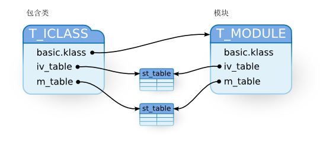
图11: 包含类
仔细看一下（A）处，结构类型标志设为了T_ICLASS。这好像是包含类的标记。
这个函数的名字是include_class_new()，因此ICLASS的I 一定是include。
如果把这个函数和rb_include_module()联合起来考虑，我们就知道，
我们先前的预期没有错。简而言之，包含是指在类和超类之间插入了一个包含类。（图12）
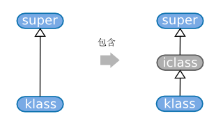
图12: 包含
在（D-2）处，模块存储在包含类的klass中。在（D-1）处，取出模块的主体……
实际上，这里的检查没有必要。这个函数开始的部分已经检查了T_ICLASS，
到这里，不可能还是T_ICLASS。在相当长一段时间内，对ruby的修改都在飞快的积累着，
因此有相当多细小的遗漏。
还有一件事要考虑。包含类的basic.klass只用于指向模块主体，
对包含类调用的方法是不可接受的。因此包含类在Ruby程序中一定是不可见的。
实际上所有的方法都会跳过包含类，不产生异常。
很复杂，让我们来看个具体的例子。我们看图13（1）。
我们有c1类，m1模块，它包含了m2。（2）和（3）的变化让c1包含m1。
im开头的当然就是包含类。
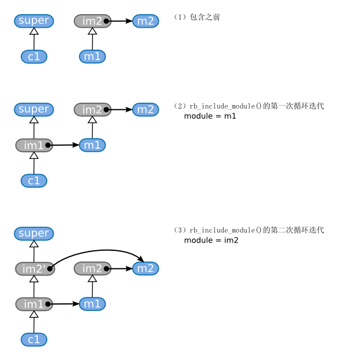
图13: 包含
rb_include_module (2)好的，现在我们可以解释我们略过的rb_include_module()了。
rb_include_module （避免重复包含）
378 /* (A) 如果超类已经包含在包含了模块，则跳过 */
379 for (p = RCLASS(klass)->super; p; p = RCLASS(p)->super) {
380 switch (BUILTIN_TYPE(p)) {
381 case T_ICLASS:
382 if (RCLASS(p)->m_tbl == RCLASS(module)->m_tbl) {
383 if (!superclass_seen) {
384 c = p; /* 移动插入点 */
385 }
386 goto skip;
387 }
388 break;
389 case T_CLASS:
390 superclass_seen = Qtrue;
391 break;
392 }
393 }
(class.c)
如果klass的超类（p）中有一个T_ICLASS（包含类），
拥有与我们要包含的模块（module）相同的表，它就是module的包含类。
我们要跳过包含，这样就不会两次包含这个模块。
如果这个模块包含了其它的模块（module->super），我们就多确认一次。
然而，当我们跳过一次包含，p就已经包含一次的那个模块，因此，
它的包含模块必然已经包含其中……经过瞬间思考，我们得到下面的上下文：
module M end module M2 end class C include M # M2还没有包含在M中 end # 因此M2还不在C的超类中 module M include M2 # 在这M2包含在M中， end class C include M # 我只想在这添加M2 end
反过来说，存在include没有实时响应的情况。
对于类继承而言，类的singleton方法得到了继承，但在模块这里没有这样的事情。
包含类（或模块）无法继承模块的singleton方法。当你也想继承singleton方法时，
通常的方式是覆写Module#append_features。